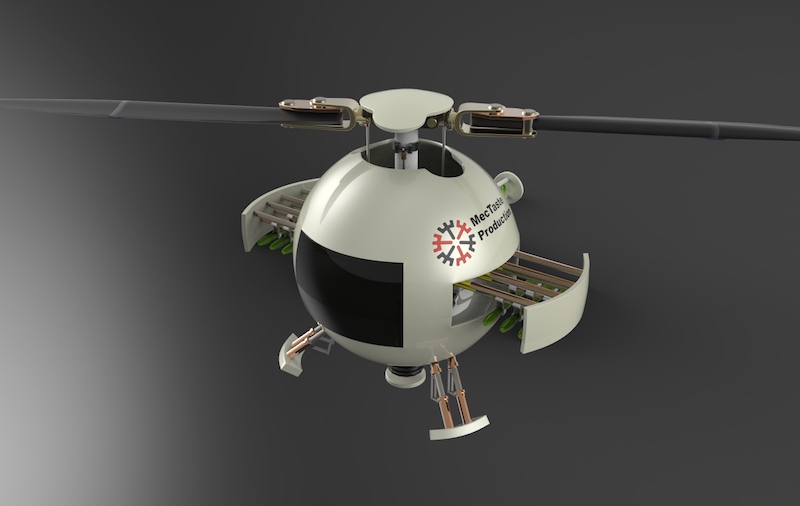
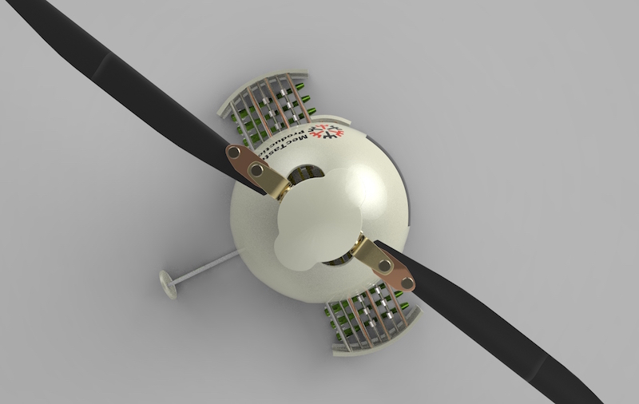
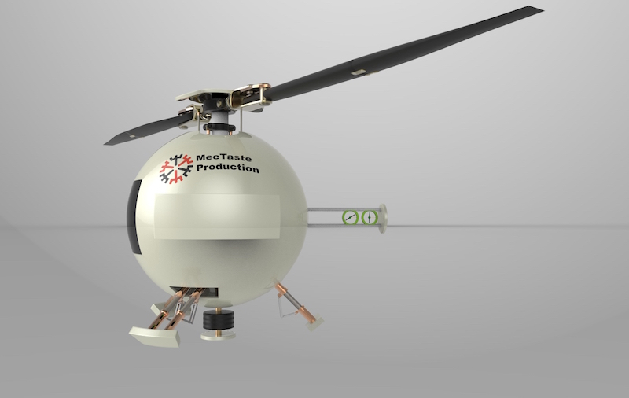

Design 4 Autodesk
- Client: Autodesk
- Date: September 2015
- Service: Industrial Design

I’ve always been a fan of robots. This website interface is designed for the presentation of my robot concept in Design 4 Autodesk Contest. It is modeled with Autodesk Fusion 360 and rendered by Keyshot. The general idea is to design a robot that can transform from a regular geometry into a functional machine. In certain situations, it shrinks into a sphere to roll at a faster speed to reach to the designated position and expands to a robot afterward.
This robot won me a prize from Autodesk and further brought me a promotion to be entitled with an Autodesk Student Expert since November 2015. The Autodesk® Education Expert Network (now moved to Autodesk Design Academy) is to enable students, educators, alumni, and partners to showcase their portfolios, support design, testing and connect with the larger design community and industry.
It has also been chosen as one of possible proposal projects for transformation devices by School of Mechanical Engineering in Hefei University of Technology.
This is the 2nd team member in this series, an airborne early warning and control system.
In a real combat, it transforms into a helicopter with two blade propeller on the top and a two small propellers on the tail. The role for the airborne early warning is to take control of the whole battle and provide tactical guidance to the other team members, e.g. map of terrain, location of enemies, best path and prediction.
  Close